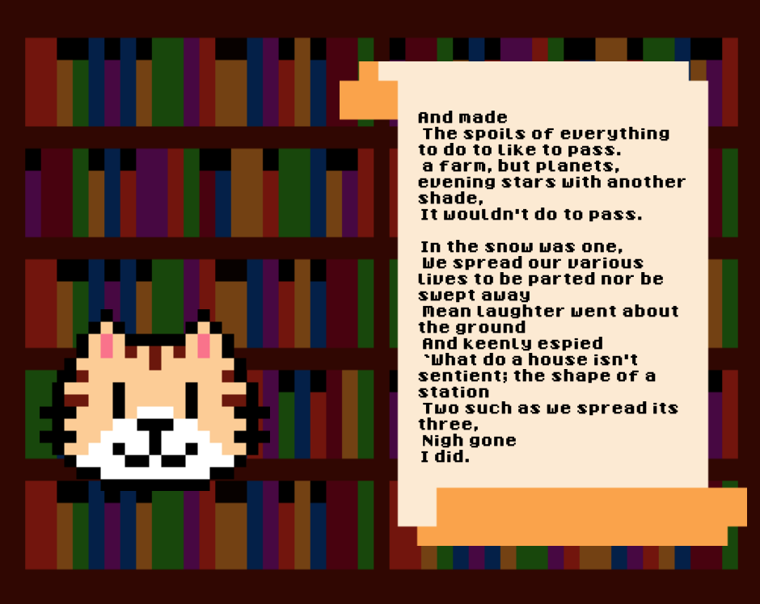

find me on the interwebs!

🌲 🌈 💻 ✨ 📚
Tools: Swift, CreateML, NaturalLanguage, Python, pandas, BeautifulSoup | Source Code: GitHub
What Makes a Great Poet? is a Swift playground that I developed for my Apple WWDC19 Scholarship submission. Inspired by the poets I was learning about in my AP English Literature class (specifically Ezra Pound, Emily Dickinson, and Robert Frost), I decided to build a playground that analyzed different poets' styles and generated poems by imitating them. All of this is done in the company of a kitten and aspiring poet, Mr. Whiskers 🐱
Before starting on the Swift playground, I built a web scraper in Python to collect some poems by each of the poets off of poemhunter.com. The actual Swift playground has a lot of different moving parts: there is the visual scene (once again in my 8-bit style), audio commentary, and everything going on behind the scenes. I struggled a lot getting the voice reading the poems to match up timing-wise with the lines on the screen, which required some clever manipulation of starting and pausing conditions. For the actual poetry analysis, I used CreateML to train a model that would predict which poet wrote a given poem, and NaturalLanguage to train a simple Markov Chain that would generate poems in a given poet's style.
Although I didn't end up getting selected for a WWDC19 scholarship, I greatly enjoyed the process of developing Mr. Whiskers & his analysis of poetry. Working with unfamiliar tools gave me an amazing opportunity to hone my development skills!
Below is a poem by Mr. Whiskers, in the style of Robert Frost:
find me on the interwebs!